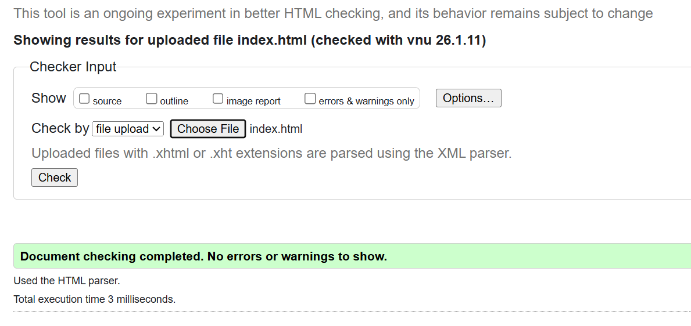
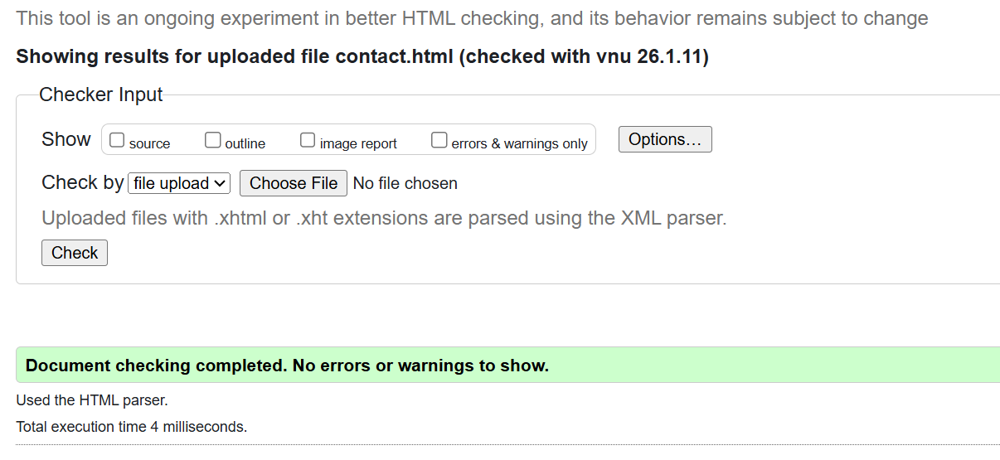
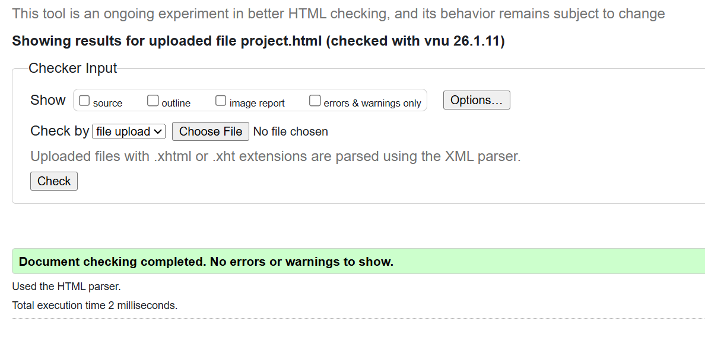
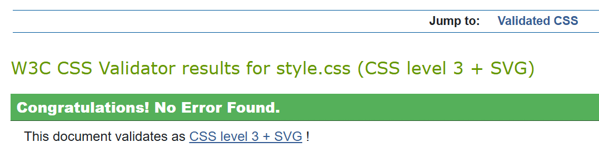

Site Report & Reflective Discussion
Introduction
This site report describes my experience of designing and developing a responsive portfolio website for the CSY1063 Web Development module. The purpose of the website is to present my profile, projects, contact details, video demonstration, and this reflective report using modern client-side web technologies such as HTML5 and CSS.
Development Process and Learning Experience
At the beginning of the module, I found web development challenging, especially
understanding how different HTML elements work together and how CSS affects page
layout. I initially relied too much on generic div elements, but as the
module progressed, I learned the importance of using semantic HTML tags such as
header, nav, main, section, and
footer to improve structure and accessibility.
One of the most difficult parts was working with CSS layouts. I faced issues with alignment, spacing, and responsive behaviour, particularly when switching between desktop and mobile views. Through experimentation, debugging, and use of browser developer tools, I learned how CSS Grid and Flexbox can be used together to create flexible and well-structured layouts.
Debugging was sometimes frustrating, especially when small errors such as incorrect file paths, missing closing tags, or CSS conflicts caused the layout to break. However, these challenges helped me build confidence and improved my ability to identify and fix problems independently.
Design Decisions and User Interface
The website was designed with a clean and simple user interface to ensure readability and ease of navigation. A consistent navigation menu is used across all pages so users can easily move between sections of the site. A red accent colour was chosen for buttons and highlights to create visual contrast while keeping the overall design professional.
Responsive design was a key focus of this project. Media queries were used to adapt the layout for smaller screens, and a hamburger navigation menu was implemented so that the website remains usable on mobile devices. The Projects page uses a different grid layout from the other pages to demonstrate my understanding of layout variation using CSS Grid.
Validation and Technical Implementation
All HTML and CSS files were tested using the W3C HTML and CSS validation tools to ensure compliance with web standards. Validation helped me identify and correct syntax errors and improve the overall quality of my code. Screenshots of the validation results are included below.
   Version Control and GitHub Usage
GitHub was used throughout the development of this project to manage version control. Regular commits were made on different dates with meaningful commit messages to document the progress of the website. This allowed me to track changes, experiment safely, and revert to earlier versions when necessary.
Use of Generative AI
Generative AI tools were used in an assistive role to help understand HTML and CSS concepts and to debug layout and responsiveness issues. All code was written, tested, and fully understood by me in accordance with the module’s academic integrity and Generative AI guidelines.
Video Demonstration
Video demonstration: Watch Video